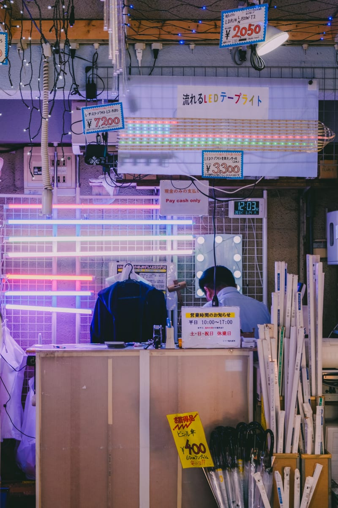
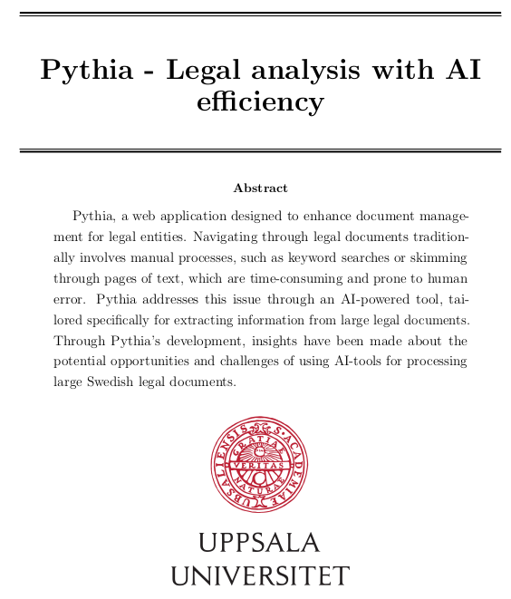
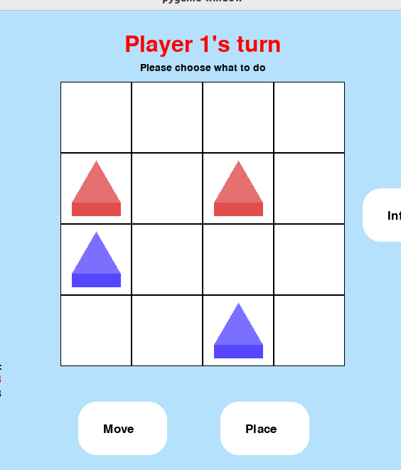

JobView
Desktop appA clearer view of the job search. Track applications, connect Gmail, and keep every next step in one place—with local storage and optional AI email classification.
Explore project : JobView on GitHubBuilt for Windows
Software engineering & a creative eye
I’m Viktor, M.Sc in Computer and Information Engineering.
Explore my workA selection of things I’ve made
A clearer view of the job search. Track applications, connect Gmail, and keep every next step in one place—with local storage and optional AI email classification.

Places, people, and moments across Asia and Sweden. A photography collection brought to life with a custom gallery, a Django API, and Cloudinary image delivery.

AI-assisted legal document analysis. A bachelor’s thesis in collaboration with Domstolsverket.
A personal project exploring how AI can fit into an everyday calendar application.

A game against an AI opponent, built for Software Engineering and Project Management coursework.
Exploring socioeconomic factors to predict diabetes rates across different countries.
Try a different name or technology, or clear the filters to see all my work.
Have something in mind?